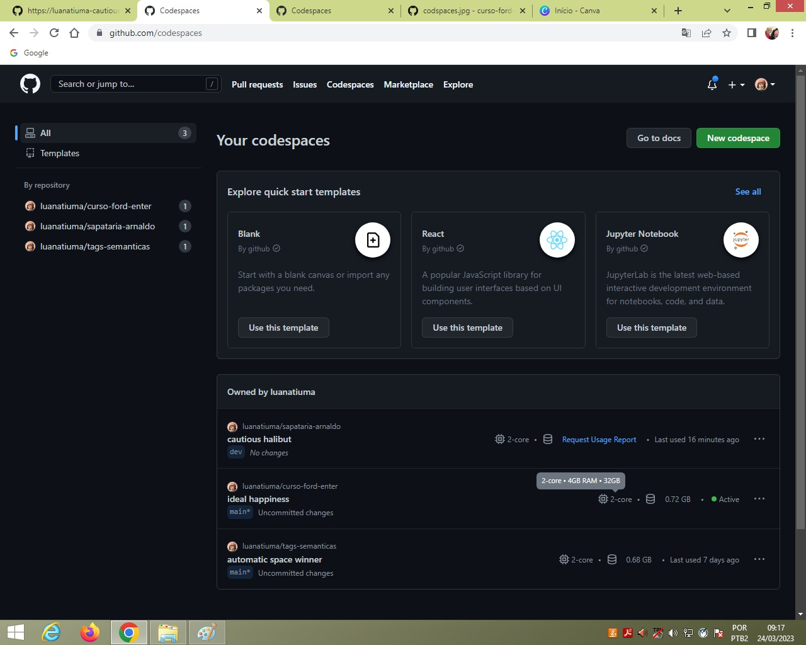

Codspaces - ambiente/máquina virtual para codar (criar códigos). Ao entrar no github e ir em codspaces dá pra verificar as configurações do seu ambiente virtual como se fosse uma máquina realmente.
VSCode - é um IDE - Integrated Development Enviroment.
Alt+Z - quebra de texto - formata o texto no ambiente de codar para ficar em uma tela só, também é possível realizar esse comando através do menu sanduíche -> Ver -> Quebra de texto.
Ctrl+' - direciona para o terminal
Ctrl+J - direciona para o terminal
Ctrl+Z - desfazer alguma alteração realizada no arquivo.
Explorador (abaixo do menu sanduíche) - Permite verificar ou criar pastas e arquivos.
Controle de código-fonte - interface gráfica do terminal do git: + -> git add . ; Commit -> git commit -m "" ; push -> git push ; synchronize changes (comando na linha debaixo no ambiente virtual) -> git pull
Extensões
Github - é possível compartilhar os problemas dos códigos com a comunidade de programadores.
Contas - é possível sincronizar as contas do ambiente virtual, ou seja, todas as extensões instaladas em uma máquina ou alterações realizadas no ambiente de codar serão passadas para as próximas máquinas criadas na sua conta.
Gerenciar - é possível alterar as cores do ambiente de codar em temas
Problemas - todos os problemas do código são visualizados nesta tela
Saída
Console de depuração
Terminal - é o local onde são colocados os comandos do git - é possível ir para o terminal através do comando ctrl + ' ou ctrl + j
Portas - ver em tempo real as alterações do código - já precisa ter clicado no goLive (live server) -> Endereço Local -> Visualizar no editor (abre o atalho para visualização no próprio servidor)
Comentários
git status - verifica o arquivo e os commits
git add . - adicionar as alterações
git commit -m "" - commita as alterações adicionadas, e o que fica entre os "" é a mensagem que vai aparecer no seu commit
git push - envia todos os commits e alterações para o repositório
git pull - sincroniza as pastas e projetos que não foram adicionadas no meio ambiente, ou seja, as alterações foram realizadas em outro lugar, ex: o readme feito direto no github
git clone - copiar o link HTTPS do repositório desejado, dentro do github, e colocar o link ao lado do comando git clone para clonar o repositório para o local de trabalho
git branch - criar uma branch, muito útil para realizar atualizações em um site e deixar a página online para os usuários antes da atualização de fato
git checkout - muda o branch, ex: se é realizado uma branch dev e você deseja acessá-lo, digitar o comando git checkout dev
git --version - verifica a versão do git que está instalada
git update-git-for-windows - atualiza o git para a última versão disponível
git config --global user.email "e-mail" - comando para realizar o login no git
git config --global user.name "name" - comando para realizar o login no git
É possível adicionar o estilo tipo CSS na página através de 3 modos diferentes: